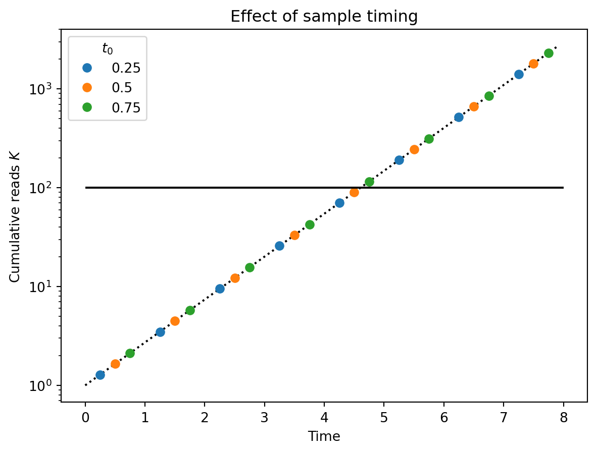

Consider a population of \(N\) individuals. We focus on the phase of the epidemic when it is growing exponentially. This will be approximately true at an intermediate time when the virus is common enough that we can neglect noise in reproduction, but rare enough that it is not running out of susceptible people to infect. Let the rate of new infections per interaction per unit time to be \(\alpha\) and the rate of recovery of an infected person to be \(\beta\). Then, we have the following ODE for the prevalence \(P(t)\):
\[
\frac{dP}{dt} \approx \alpha N P - \beta P.
\]
The first term on the right-hand side is the incidence per unit time: \(I \approx \alpha N P\). (Note that we are assuming that the number of susceptible people is approximately \(N\), which will cease to be true as the virus becomes common.)
Solving this equation and choosing \(t = 0\) to be the time when one person is infected gives: \[
\begin{align}
P(t) & = e^{(\alpha N - \beta) t} \\
& = e^{rt} \\
I(t) & = \alpha N e^{rt} \\
& = (r + \beta) e^{rt},
\end{align}
\] where we have defined the exponential growth rate \(r \equiv \alpha N - \beta\).
Cumulative incidence
As a yardstick for measuring the progress of the epidemic, we are interested in the cumulative incidence, \(C(t)\), the number of people who have ever been infected. Integrating \(I(t)\) with the initial condition \(C(0) = 1\) to account for the single individual infected at \(t = 0\), we have: \[
\begin{align}
C(t) & = 1 + \int_0^t I(t') dt' \\
& = 1 + \frac{r + \beta}{r} (e^{rt} - 1).
\end{align}
\] Note that when sick individuals never recover (\(\beta = 0\)), \(C(t) = P(t)\), as expected.
A useful feature of the exponential growth regime is that all of our quantities of interest grow exponentially at the same rate and are thus in proportion to one another: \[
\begin{align}
I(t) & = (r + \beta) P(t) \\
C(t) & \sim \frac{r + \beta}{r} P(t), \text{as } t \to \infty.
\end{align}
\]
Rearranging, we see that the fraction of cumulative incidence that are currently infected is controled by the ratio of growth rate to recovery rate: \[
\frac{P(t)}{C(t)} \sim \frac{r}{r + \beta}.
\] This ranges from zero when the epidemic grows slowly and individuals recover quickly, to one wher the epidemic grows much faster than recovery. For a virus like SARS-CoV-2, where both doubling and recovery times were on the order of a week, we expect on the order of half of the cumulative infections to be currently sick during the exponetial phase.
Domain of validity
As described above, the approximation of deterministic exponential growth is valid when the number of infected individuals is large enough that the growth is roughly deteriminstic but small enough that most of the population is still susceptible. Here we’ll approximate those bounds.
Deterministic growth
A simple stochastic model of the start of an epidemic is that infections and recoveries in a small increment of time \(dt\) are independent of one another, that is: \[
\begin{align}
\text{\# Births} & \sim \text{Poisson}(\alpha N P dt) \\
\text{\# Deaths} & \sim \text{Poisson}(\beta P dt).
\end{align}
\] This implies that the change in prevalence, \(dP = (\text{\# Births}) - (\text{\# Deaths})\), during \([t, t+dt)\) has mean and variance: \[
\begin{align}
\mathbb{E}(dP) & = (\alpha N - \beta) P dt \\
& = r P dt \\
\mathbb{V}(dP) & = (\alpha N + \beta) P dt \\
& = (r + 2 \beta) P dt.
\end{align}
\]
A deterministic approximation is good when the coefficient of variation of \(dP\) is much smaller than one, that is: \[
\begin{align}
\frac{\sqrt{\mathbb{V}(dP)}}{\mathbb{E}(dP)} & \ll 1 \\
\frac{\sqrt{(r + 2 \beta) P dt}}{r P dt} & \ll 1 \\.
\end{align}
\] Some algebra gives the condition that the prevalence is larger than a critical value: \[
P \gg \frac{r + 2 \beta}{r^2 dt}.
\] It remains to choose a suitable increment of time. We expect the prevalence to change significantly (\(\mathbb{E}(\frac{dP}{P}) = 1\)) on the timescale \(r^{-1}\) so \(dt = r^{-1}\) is a reasonable choice as long as \(r \gtrsim \beta\). This gives the condition \[
P \gg \frac{r + 2 \beta}{r} = 1 + 2 \beta / r.
\] When this condition is met, we expect the epidemic to grow approximately deterministically at rate \(r\).
Note that this condition is violated at \(t = 0\). We must thus reinterpret \(t = 0\) as the effective time that the epidemic would have infected a single person if our derterministic approximation for \(P \gg 1 + 2\beta/r\) were extended backwards in time. [TODO: estimate the error in cumulative infections introduced by making this approximation.]
Exponential growth
As the virus spreads, the number of susceptible people declines, reducing the rate of spread and resulting in sub-exponential growth. Let the number of susceptible people be \(S(t)\), then the incidence per time is: \[
I(t) = \alpha S(t) P(t).
\] Above, we assumed that \(S(t) = N\). \(I(t)\) will thus be reduced by half by the time \(S(t) = N / 2\). This is a convenient upper bound on the domain of validity.
Assuming that anyone previously infected is no longer susceptible, we have: \[
\begin{align}
S(t) & \gg N / 2 \\
N - C(t) & \gg N / 2 \\
C(t) & \ll N / 2.
\end{align}
\]
Using \(C = \frac{r + \beta}{r} P\) in the exponential regime, we can put this together with our lower bound of the deterministic approximation to get the region of validity: \[
1 + 2\beta / r \ll P \ll \frac{N}{2 (1 + \beta / r)}.
\] This shows that as long as the population is large (\(N \gg 1\)), and the growth rate is not too slow compared to the recovery rate (\(r \gtrsim \beta\)), there will be a wide regime of approximately deterministic exponential growth.
Sampling, sequencing, and detection
Consider a set of samples taken at times \(\{t_0, t_1, \ldots\}\), where \(t_0 \ge 0\) is the the first sampling time after the virus begins to spread. (Presumably sampling has been ongoing but we’ll ignore the earlier samples.) We sequence sample \(i\) to a total depth of \(n_i\) reads and find that \(k_i\) match the sequence of the pandemic virus.
We consider the virus to be detected when the cumulative number of viral reads reaches a threshold \(\hat{K}\). We’ll define \(\hat{t}\) to be the smallest sample time \(t_i\) such that: \[
K_i \equiv \sum_{j=0}^i k_j \geq \hat{K}.
\] We also want to consider the effect of the delay, \(t_d\), between when the critical sample is collected and when we have processed, sequenced, and analyzed the data.
We will assess the success of a method by the (population-scaled) cumulative incidence at the time of detection, accounting for the delay: \[
c(\hat{t} + t_d) \equiv C(\hat{t} + t_d) / N
\]
Because we’re interested in population-scale quantities and because we’ve shown that our model is not accurate when there are only a few individuals, we will make two assumptions:
The prevalence at detection \(P(t) = e^{rt} \sim N\), as \(N \to \infty\).
We can neglect any smaller terms that do not scale with \(N\).
Using the equations above for cumulative incidence, we have the following simplification: \[
\begin{align}
c(t) & = \frac{1 + \frac{r + \beta}{r}\left(e^{rt} - 1\right)}{N} \\
& = \frac{r + \beta}{r} \frac{e^{rt}}{N} + \mathcal{O}(N^{-1}).
\end{align}
\]
Note that we can immediately see the cost of delay: \[
c(\hat{t} + t_d) = \frac{r + \beta}{r} \frac{e^{r\hat{t}}}{N} e^{r t_d}.
\] With an exponentially growing pandemic, post-sampling delay multiplies our cumulative incidence at detection by \(e^{rt_d}\).
In the rest of this section, we answer the question:
If we want to detect the virus by the time it reaches a particular cumulative incidence, \(\hat{c}\), how much sequencing do we need to do per unit time?
Sampling to relative abundance
Here we make two more important deterministic assumptions:
The viral read counts are deterministic, given the expected relative abundance, \(a_i\), in each sample: \(k_i = n_i a_i\).
The expected relative abundance is itself a deterministic functional of the prevalence: \[
a_i = b \int \frac{P(t)}{N} \rho_i(t) dt.
\] Here, \(\rho_i\) is a density that says how much of sample \(i\) was collected at different times, and \(b\) is a fixed conversion factor between prevalence and relative abundance. (Note \(b = RA_p(1)\) in the P2RA manuscript.)
From here on, it will simplify thing to specify two concrete sampling schemes. Both schemes collect evenly-spaced samples with the same depth:
\(n_i = n\)
\(t_i - t_{i-1} = \delta t\)
\(0 \leq t_0 < \delta t\), since we don’t know how long before the first sample the pandemic began.
Our two schemes differ in when the material for the samples is collected. They are:
Grab sampling: \(\rho_i(t) = \delta(t - t_i)\), i.e., the whole sample is collected at \(t_i\).
Continuous sampling
First, we use the assumptions in the previous section to calculate the cumulative reads by sample \(i\): \[
\begin{align}
K_i & = \sum_{j=0}^{i} n a_i \\
& = n \sum_{j=0}^{i} b \int_{t_{j-1}}^{t_j} \frac{P(t)}{N} \frac{dt}{\delta t} \\
& = \frac{n b}{\delta t} \int_{0}^{t_i} \frac{P(t)}{N} dt.
\end{align}
\]
At this point, we could make the substitution \(I(t) = (r + \beta) P(t)\) from our exponential model. This would give us: \[
\begin{align}
K_i & = \frac{nb}{\delta t} (r + \beta) \int_{0}^{t_i} \frac{I(t)}{N} dt \\
& = \frac{n b (r + \beta)}{\delta t} c(t_i),
\end{align}
\] which is the result from the simple calculation in the P2RA manuscript, using the conversion factor \(r + \beta\) to convert between \(RA_p\) and \(RA_i\), which is only valid in the exponential growth case.
Instead, we’ll proceed in a more general way, which will extend to the grab sampling model and account for the discrete nature of our sampling.
Using our exponential growth model for \(P\), we have: \[
\begin{align}
K_i & = \frac{nb}{\delta t}
\end{align}
\]
One complication is that the sample \(i\) that \(K_i \geq \hat{K}\) depends on the precise timing of our samples. In the figure below, the three colored series show \(K_i\) for three series of samples that differ only by the relative timing of their sample collection (e.g., all samples are collected weekly, but one series collects on Mondays, another on Tuesdays, etc.) Note that the red figure, whose first sample was taken latest relative to the start of the pandemic, crosses the threshold (solid black line) one sample earlier than the others.
Code
import numpy as npimport matplotlib.pyplot as pltt_max =8r =1.0k_hat =100dt =1.0time = np.arange(0, t_max, 0.1)plt.plot(time, np.exp(r * time), "k:")for t_0 in [0.25, 0.5, 0.75]: t = np.arange(t_0, t_max, dt) k = np.exp(r * t) plt.plot(t, k, "o", label=t_0)plt.hlines(k_hat, 0, t_max, "k")plt.yscale("log")plt.ylabel("Cumulative reads $K$")plt.xlabel("Time")plt.title("Effect of sample timing")plt.legend(title="$t_0$")

We account for this effect by splitting \(\hat{t}\) into two components:
The earliest time possible to detect, \(t^{\star}\), found by allowing \(K\) to vary continously in time (dotted line above)
The residual time waiting for the next sample to be collected. Because we have no reason to expect this waiting time to take any particular value, we average it over a uniform distribution.
First, we will find an implicit equation for \(t^{\star}\): \[
\begin{align}
\hat{K} & = \frac{nb}{\delta t} \int_0^{t^{\star}} \frac{P(t)}{N} dt \\
& = \frac{nb}{\delta t} \left(\frac{e^{r t^{\star}}}{rN} + \mathcal{O}(N^{-1})\right)\\
\end{align}
\]
Next we average our target cumulative incidence over the sample waiting time: \[
\begin{align}
\hat{c} & = \int_{t^{\star}}^{t^{\star} + \delta t} c(\hat{t} + t_d) \frac{d \hat{t}}{\delta t} \\
& = \int_{t^{\star}}^{t^{\star} + \delta t}
\frac{r + \beta}{r} \frac{e^{r(\hat{t} + t_d)}}{N} \frac{d \hat{t}}{\delta t}
+ \mathcal{O}(N^{-1}) \\
& = (r + \beta)
\left(\frac{e^{r t^{\star}}}{r N} \right)
\left(\frac{e^{r \delta t} - 1}{r \delta t}\right)
e^{r t_d}
+ \mathcal{O}(N^{-1}) \\
\end{align}
\] The the third term in parentheses is the cost incurred from having widely spaced samples. As \(r \delta t \to 0\), this cost goes to zero. When \(r \delta t\) is large, this cost grows exponentially.
Finally, we notice that the second term in parentheses appears in our implicit equation for \(t^{\star}\) above. Substituting and rearranging gives the sequencing effort required to detect by cumulative incidence \(\hat{c}\): \[
\frac{n}{\delta t} = (r + \beta) \left(\frac{\hat{K}}{b \hat{c}} \right)
\left(\frac{e^{r \delta t} - 1}{r \delta t}\right)
e^{r t_d}
+ \mathcal{O}(N^{-1})
\] Some observations:
Faster-growing and faster-recovering viruses require more sequencing because the current prevalence is a smaller fraction of the cumulative incidence.
Higher detection thresholds, lower P2RA factors (\(b\)), and lower target cumulative incidence, require more sequencing.
There is a cost associated with longer sampling intervals and delays between collection and analysis. The latter grows faster than the former.
Grab sampling
Now we turn to grab sampling at the collection times \(\{t_0, t_1, \ldots\}\). The analysis is the same as for continuous sampling, except that we will have a different implicit equation for \(t^{\star}\).
With grab sampling, \(\rho_i(t) = \delta(t - t_i)\), we have cumulative counts: \[
\begin{align}
K_i & = n \sum_{j=0}^{i} b \frac{P(t_i)}{N} \\
& = \frac{n b}{N} \sum_{j=0}^{i} e^{r (t_0 + j \delta t)} \\
& = \frac{n b}{N} e^{r t_0} \frac{e^{r(i+1)\delta t} - 1}{e^{r\delta t} - 1} \\
& = \frac{n b}{\delta t} \left(\frac{e^{r t_i}}{rN}\right)
\left(\frac{r \delta t \, e^{r \delta t}}{e^{r \delta t} - 1}\right)
+ \mathcal{O}(N^{-1}). \\
\end{align}
\] Making the continuous time substitution as before, gives \[
\hat{K} = \frac{n b}{\delta t} \left(\frac{e^{r t^{\star}}}{rN}\right)
\left(\frac{r \delta t \, e^{r \delta t}}{e^{r \delta t} - 1}\right)
+ \mathcal{O}(N^{-1}).
\] The first two terms are identical to the continuous sampling case. The third term is the effect of grab sampling: because the sample is collected entirely at the end of the interval, the prevalence is higher than the average over the interval and you get more reads.
Using this equation for \(t^{\star}\), we find that the required sequencing effort for grab sampling is: \[
\frac{n}{\delta t} = (r + \beta) \left(\frac{\hat{K}}{b \hat{c}} \right)
\left(\frac
{e^{-r\delta t} {\left(e^{r \delta t} - 1\right)}^2}
{{\left(r \delta t\right)}^2}
\right)
e^{r t_d}
+ \mathcal{O}(N^{-1})
\] This is similar to the continous sampling case but with weaker dependence on the sampling interval: